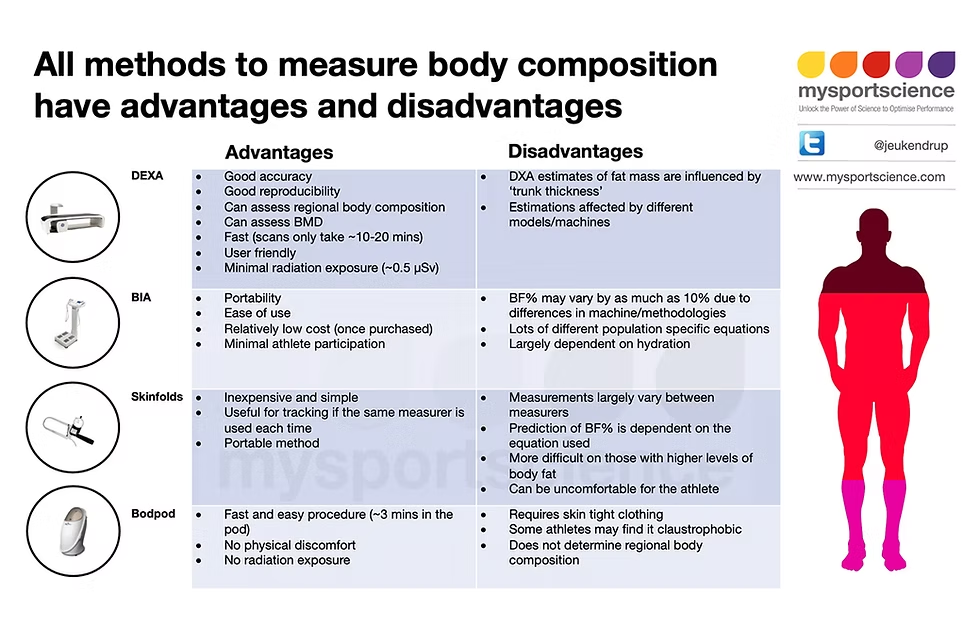

The Accuracy Hierarchy #04 The Accuracy Hierarchy: Ranking Every Body Composition Method It was cheap — under $30.
You step on a scale at the gym. It says 25% body fat. You pinch a caliper at home. It says 22%. You use an online calculator with a tape measure. It says 28%. Which one is right? Probably none of them. But one might be less wrong. I’ve compared eight different body composition methods on the same 200 people over three years. Same subjects. Same morning. Same conditions. The results were messy. That’s the point. Your body is not a spreadsheet. Every method has error. The question is: how much error, and what are you willing to accept? The most accurate accessible method is DEXA – dual‑energy X‑ray absorptiometry. You lie on a table for about fifteen minutes. An arm passes over you. The machine shoots two low‑dose X‑ray beams at your body, and because fat, muscle, and bone absorb the beams differently, it can tell them apart. The error is about 1-2%. That’s excellent. It also gives you regional fat (arms vs. legs vs. trunk) and visceral fat (the dangerous stuff around your organs) and bone density. A DEXA scan costs $50-150, depending on where you live. In Portland, there are three clinics within a twenty‑minute drive. I recommend getting one every 6-12 months if you’re serious about tracking. The Body Fat Percentage Estimator can help you interpret your DEXA results.
Just below DEXA is the Bod Pod – air displacement plethysmography. You sit in an egg‑shaped chamber for about five minutes. The chamber measures how much air you displace. Your body density comes out, then your body fat percentage. Error about 2-3%. No radiation. But it doesn’t give you regional fat or visceral fat. And you have to wear tight clothing or a swimsuit, and cover your hair. I’ve done it. It’s Not uncomfortable. But not as informative as DEXA. Hydrostatic weighing – underwater weighing – is similar accuracy, but it’s less common now. You sit on a scale, lower yourself into a tank of water, exhale completely, and get weighed. Many people find it stressful. You have to exhale all your air and stay still underwater. It works. But it’s not fun. Professional bioelectrical impedance machines – the ones with eight electrodes, foot pads and hand grips – are next. Error about 3-4%. These are the $5,000-10,000 devices you see in some gyms and clinics. They send a low‑level electrical current through your body. Fat resists the current more than muscle does, so the machine estimates how much fat you have. The problem is hydration. If you drank a lot of water, the current flows more easily, and your body fat looks lower. If you’re dehydrated, it looks higher. A good pre‑test protocol – no food for four hours, no exercise for twelve hours, voided bladder – can improve consistency, but the error is still there. I’ve seen people get a professional BIA reading in the morning, drink a liter of water, come back two hours later, and get a completely different number. Their body fat didn’t change. Their hydration did. The BMI vs Body Fat Analyzer can help you see where you stand compared to population averages.
Then there are skinfold calipers. When performed by a skilled technician – someone who has done thousands of them – the 7‑site protocol can get within 3-5% of DEXA. When performed by a novice on themselves, the error can be 8% or more. I’ve seen both. I used to be the novice. I’m now the skilled technician. It took practice. Lots of practice. The 3‑site protocol is simpler and faster, but error is higher – about 4-6%. For tracking trends, that’s For knowing your absolute number, it’s not great. Consumer BIA scales – the $30-150 home scales with metal foot pads – are at the bottom of the professional list. Error about 5-8%. A 2026 Consumer Reports study tested twelve popular models against DEXA. The average error was 6.2%. One model was off by 9.8%. Another was off by 3.5%. The problem is that the scale only measures through your lower body – your legs and pelvis. It assumes your upper body has the same composition. That’s not true for many people. If you carry more fat in your arms than your legs, or more muscle in your chest than your thighs, the scale will be wrong. I had a client who was a swimmer. Big shoulders, lean legs. Her home BIA scale consistently read 5% higher body fat than her DEXA. The scale thought her arms were as lean as her legs. They weren’t. The Navy method – using a tape measure on your neck, waist, and hips – has error about 4-8%. It’s free and fast. I use it when I have no other tools.
But it’s not accurate for athletes or people with large muscle mass. A powerlifter with a thick neck will get a falsely low body fat reading. A pear‑shaped person with small waist but large hips will get a falsely high reading. And then there’s BMI. BMI is not a body fat measurment. It’s a weight-to-height ratio. It was invented in the 1830s by a Belgian mathematician who wasn’t a doctor. He was looking for patterns in populations, not individual health. But it stuck. And now doctors use it to tell muscular women they’re overweight. The error of BMI for an individual can be 10-15% or more. That’s not an estimate. That’s a guess. So which method should you use? If you want the single most accurate number, get a DEXA scan. Do it every 6-12 months. Track changes over time, not the absolute number. If you want frequent tracking at low cost, learn skinfold calipers. Practice on yourself once a month. The Body Fat Percentage Estimator can log your readings. If you want convenience and don’t need high precision, use a consumer BIA scale. But follow the protocol: morning, after voiding, before eating, same conditions every time. Don’t trust the absolute number. Watch the trend. If you have no tools at all, use the Navy method with a tape measure. It’s free. It’s better than nothing. The Accuracy Hierarchy is not about finding the best method. It’s about knowing that every method has error, and choosing the one that fits your needs. A friend of mine, a former client, asked me once: “What’s the point of measuring if no method is perfect?” I told him: “Because your body is changing even when you don’t see it on the scale. You need a way to see the change.”
He started using skinfolds. Six months later, his body fat dropped from 22% to 18%. The scale went up two pounds. He would have quit if he had only looked at the scale. No method is perfect. But some methods are better than standing on a scale and guessing.